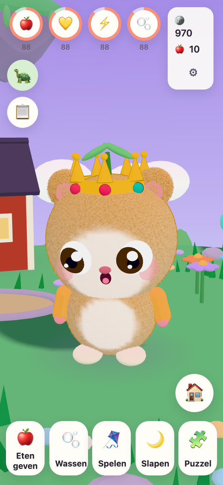
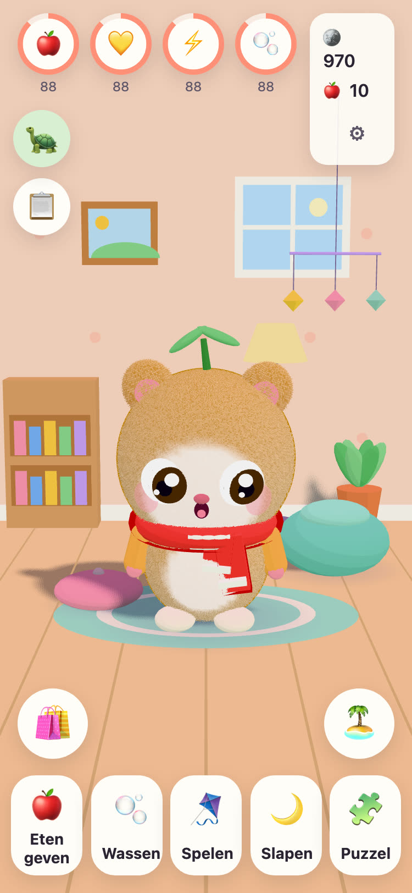
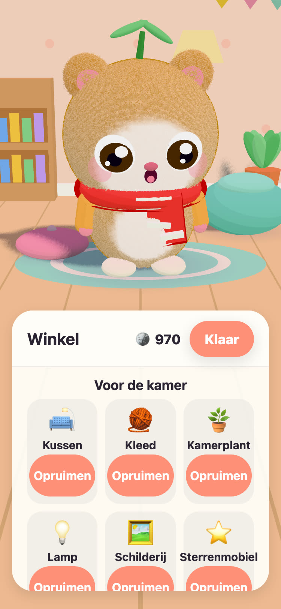
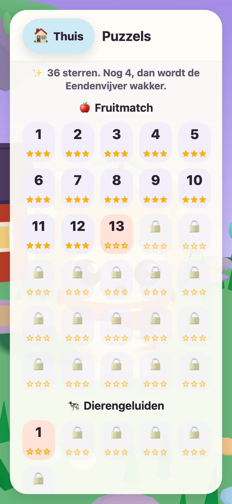

JUNOLittle Worlds
Laat een Juno uitkomen, zorg ervoor en los rustige puzzels op die een zwevend eiland wakker maken. Een rustig spel voor kinderen van 6 tot 10 jaar, op iPhone en iPad.
Hallo! Ik heb drie warme eieren gevonden. Welk ei is van jou?
- Geen reclame
- Geen tracking
- Geen account
- Geen timers of druk




Een eigen klein vriendje
Opa Tintin, de oude schildpad die voor het Weide-eiland zorgt, heeft drie warme eieren gevonden. Je kind kiest er een en geeft wat er uitkomt een naam. Vanaf dan is de Juno helemaal van je kind: om eten te geven, te wassen, mee te spelen en in bed te leggen voor een dutje.
-
Kies een ei
Drie warme eieren, drie kleuren. Je kind kiest er een en ziet het uitkomen.
-
Geef het een naam, hou ervan
Eten, wassen, spelen en slapen. De Juno laat zien hoe hij zich voelt, en groeit mee met jullie vriendschap.
-
Maak het eiland wakker
Elke puzzelster brengt licht terug op het Weide-eiland, tot de bloemen, bijen en eenden weer thuis zijn.
Eten, wassen, spelen, slapen
Verschillend eten en speelgoed, bubbels in bad en een Juno die laat zien hoe hij zich voelt. Behoeften dalen langzaam en nooit tot nul, dus een Juno raakt nooit kwijt.
57 rustige puzzels
Fruitmatch, Geheugentuin, en Dierengeluiden en Voertuiggeluiden met echte opnames. Sterren krijg je voor zetten, nooit voor tijd, en opnieuw proberen is altijd gratis.
Een eiland dat wakker wordt
De Bloementuin gaat open met bijen, de Eendenvijver vult zich met water en eenden, en in de moestuinbedden groeien zaadjes uit tot appels en aardbeien.
Een kamer om gezellig te maken
Met munten uit puzzels en de opdrachten van vandaag koop je versieringen voor de kamer van de Juno en kleren om aan te trekken. Niets in de muntenwinkel kost echt geld.
Alles wordt voorgelezen
Opa Tintin leest elke zin voor met zijn eigen warme stem, voor kinderen die nog niet kunnen lezen. Tik op hem om het nog eens te horen.
Een plek voor ouders
Achter een oudercontrole: taal, voorlezen, geluiden, bedtijd en een vriendelijke pauzeherinnering. Tijdens bedtijd slaapt de Juno, en de puzzels wachten tot de ochtend.
Spreekt 21 talen
Opa Tintin praat met je kind in zijn of haar eigen taal. Kies er een onder Ouders, of laat het spel het apparaat volgen.
English Svenska Dansk Norsk Suomi Deutsch Nederlands Français Español Italiano Português (Brasil) Polski Русский Ελληνικά Türkçe Bahasa Melayu Kiswahili हिन्दी 日本語 한국어 简体中文
Gemaakt door een opa
JUNO is in Zweden gemaakt door een opa voor zijn kleindochter: een spel dat hij haar graag ziet spelen. Opa Tintin, de schildpad in het spel, is hijzelf.
Daarom zijn de regels eenvoudig. Niets dat druk zet, niets dat misleidt, en niets dat iets over je kind verzamelt.
Gratis, zonder reclame
JUNO is gratis te downloaden en heeft geen reclame, geen tracking en geen account. Alles wat je kind doet, blijft op je apparaat. Zie de privacypagina.
Een volwassene kan JUNO Plus of het Winterpakket kopen onder Ouders, achter de oudercontrole. Het zijn allebei eenmalige aankopen die je kunt herstellen en delen met je gezin.